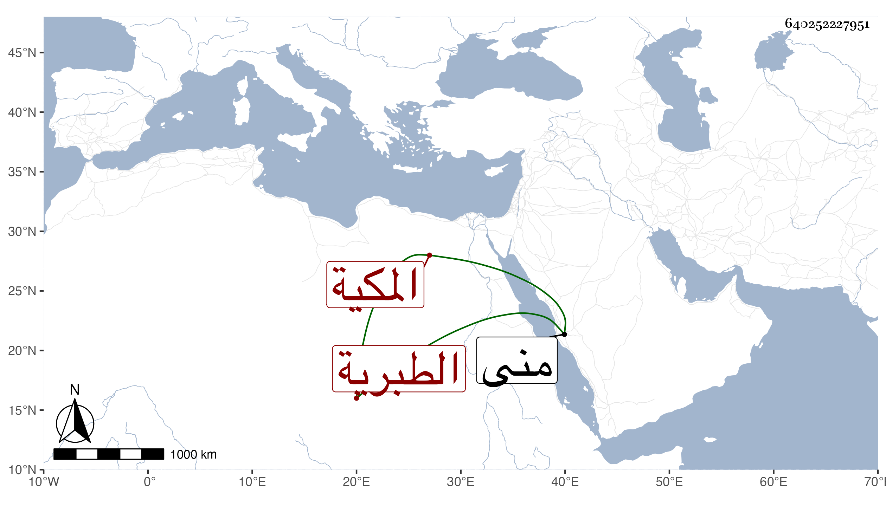

0902Sakhawi.DawLamic.ITO20230111-ara1.EIS1600.640252227951
Biography ID: 640252227951
922
أم الكرام ابنة أبي السعادات محمد بن المحب محمد بن الرضى محمد بن المحب محمد بن الشهاب أحمد بن الرضى إبراهيم بن محمد بن إبراهيم الطبرية المكية وتسمى جامعة ومنى ، أمها أم هاني ابنة عبد الرحمن بن الجمال المصري . ولدت في المحرم سنة سبع وخمسين وثمانمائة . وماتت صغيرة في ذي الحجة سنة اثنتين وستين .
